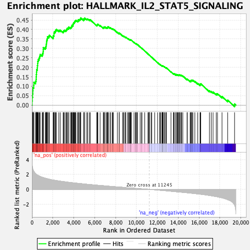
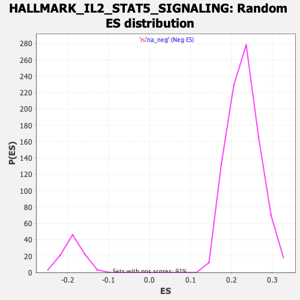

| | | Dataset | Recurrence |
| Phenotype | NoPhenotypeAvailable |
| Upregulated in class | na_pos |
| GeneSet | HALLMARK_IL2_STAT5_SIGNALING |
| Enrichment Score (ES) | 0.46111494 |
| Normalized Enrichment Score (NES) | 2.0049276 |
| Nominal p-value | 0.0 |
| FDR q-value | 2.7631578E-4 |
| FWER p-Value | 0.001 |
Table: GSEA Results Summary

Fig 1: Enrichment plot: HALLMARK_IL2_STAT5_SIGNALING
Profile of the Running ES Score & Positions of GeneSet Members on the Rank Ordered List
| SYMBOL | RANK IN GENE LIST | RANK METRIC SCORE | RUNNING ES | CORE ENRICHMENT | | 1 | CCND2 | 14 | 3.415 | 0.0217 | Yes |
| 2 | TWSG1 | 29 | 3.172 | 0.0418 | Yes |
| 3 | GPR65 | 59 | 2.843 | 0.0590 | Yes |
| 4 | CD86 | 81 | 2.735 | 0.0759 | Yes |
| 5 | CD48 | 93 | 2.670 | 0.0929 | Yes |
| 6 | AHR | 167 | 2.451 | 0.1052 | Yes |
| 7 | CD83 | 179 | 2.427 | 0.1206 | Yes |
| 8 | ADAM19 | 340 | 2.113 | 0.1262 | Yes |
| 9 | GALM | 396 | 2.050 | 0.1369 | Yes |
| 10 | CTSZ | 404 | 2.039 | 0.1499 | Yes |
| 11 | GADD45B | 415 | 2.028 | 0.1627 | Yes |
| 12 | GBP4 | 433 | 2.008 | 0.1750 | Yes |
| 13 | CAPG | 443 | 1.994 | 0.1877 | Yes |
| 14 | CD44 | 511 | 1.924 | 0.1968 | Yes |
| 15 | IL10RA | 518 | 1.919 | 0.2091 | Yes |
| 16 | SERPINB6 | 544 | 1.896 | 0.2203 | Yes |
| 17 | SHE | 556 | 1.881 | 0.2321 | Yes |
| 18 | IL4R | 603 | 1.855 | 0.2419 | Yes |
| 19 | CISH | 680 | 1.807 | 0.2499 | Yes |
| 20 | IL18R1 | 734 | 1.770 | 0.2587 | Yes |
| 21 | ANXA4 | 777 | 1.747 | 0.2681 | Yes |
| 22 | ITIH5 | 974 | 1.634 | 0.2687 | Yes |
| 23 | TNFRSF1B | 1044 | 1.598 | 0.2756 | Yes |
| 24 | SELL | 1069 | 1.585 | 0.2848 | Yes |
| 25 | TNFRSF21 | 1084 | 1.578 | 0.2944 | Yes |
| 26 | CTLA4 | 1089 | 1.575 | 0.3046 | Yes |
| 27 | COL6A1 | 1270 | 1.506 | 0.3051 | Yes |
| 28 | CCND3 | 1344 | 1.473 | 0.3110 | Yes |
| 29 | ITGA6 | 1356 | 1.470 | 0.3201 | Yes |
| 30 | CSF1 | 1386 | 1.461 | 0.3282 | Yes |
| 31 | RHOH | 1396 | 1.457 | 0.3374 | Yes |
| 32 | PTH1R | 1429 | 1.446 | 0.3452 | Yes |
| 33 | AGER | 1468 | 1.433 | 0.3527 | Yes |
| 34 | TRAF1 | 1485 | 1.427 | 0.3612 | Yes |
| 35 | CST7 | 1606 | 1.384 | 0.3641 | Yes |
| 36 | TGM2 | 1666 | 1.365 | 0.3700 | Yes |
| 37 | FAH | 2022 | 1.262 | 0.3599 | Yes |
| 38 | TNFSF10 | 2040 | 1.256 | 0.3673 | Yes |
| 39 | IRF4 | 2106 | 1.241 | 0.3721 | Yes |
| 40 | NFKBIZ | 2107 | 1.241 | 0.3803 | Yes |
| 41 | TNFRSF4 | 2135 | 1.234 | 0.3870 | Yes |
| 42 | SPP1 | 2226 | 1.213 | 0.3903 | Yes |
| 43 | IFITM3 | 2263 | 1.205 | 0.3964 | Yes |
| 44 | SLC29A2 | 2340 | 1.185 | 0.4002 | Yes |
| 45 | PTGER2 | 2570 | 1.137 | 0.3958 | Yes |
| 46 | UCK2 | 2702 | 1.108 | 0.3963 | Yes |
| 47 | SCN9A | 2982 | 1.054 | 0.3888 | Yes |
| 48 | TNFRSF9 | 3033 | 1.044 | 0.3931 | Yes |
| 49 | CDC42SE2 | 3103 | 1.031 | 0.3963 | Yes |
| 50 | CCNE1 | 3242 | 1.007 | 0.3958 | Yes |
| 51 | CXCL10 | 3307 | 0.993 | 0.3990 | Yes |
| 52 | EMP1 | 3350 | 0.986 | 0.4033 | Yes |
| 53 | FLT3LG | 3395 | 0.977 | 0.4075 | Yes |
| 54 | LIF | 3510 | 0.956 | 0.4079 | Yes |
| 55 | UMPS | 3530 | 0.954 | 0.4131 | Yes |
| 56 | MAPKAPK2 | 3702 | 0.924 | 0.4104 | Yes |
| 57 | GPX4 | 3766 | 0.914 | 0.4131 | Yes |
| 58 | BHLHE40 | 3820 | 0.903 | 0.4163 | Yes |
| 59 | SLC2A3 | 3826 | 0.903 | 0.4220 | Yes |
| 60 | IL2RB | 3924 | 0.886 | 0.4228 | Yes |
| 61 | SOCS1 | 3932 | 0.885 | 0.4282 | Yes |
| 62 | SLC39A8 | 3969 | 0.879 | 0.4322 | Yes |
| 63 | EOMES | 4001 | 0.874 | 0.4363 | Yes |
| 64 | TNFRSF8 | 4064 | 0.864 | 0.4388 | Yes |
| 65 | IL3RA | 4094 | 0.859 | 0.4429 | Yes |
| 66 | ICOS | 4142 | 0.853 | 0.4461 | Yes |
| 67 | IFNGR1 | 4208 | 0.843 | 0.4483 | Yes |
| 68 | SWAP70 | 4369 | 0.819 | 0.4454 | Yes |
| 69 | GLIPR2 | 4436 | 0.811 | 0.4473 | Yes |
| 70 | RGS16 | 4442 | 0.810 | 0.4524 | Yes |
| 71 | MYC | 4550 | 0.793 | 0.4520 | Yes |
| 72 | TNFRSF18 | 4609 | 0.784 | 0.4542 | Yes |
| 73 | PRKCH | 4666 | 0.776 | 0.4564 | Yes |
| 74 | TLR7 | 4674 | 0.775 | 0.4611 | Yes |
| 75 | ITGAV | 4947 | 0.733 | 0.4519 | No |
| 76 | TTC39B | 4958 | 0.731 | 0.4561 | No |
| 77 | MAFF | 5049 | 0.718 | 0.4562 | No |
| 78 | PHTF2 | 5056 | 0.717 | 0.4606 | No |
| 79 | KLF6 | 5255 | 0.691 | 0.4549 | No |
| 80 | CCR4 | 5329 | 0.680 | 0.4556 | No |
| 81 | IL1RL1 | 5494 | 0.657 | 0.4514 | No |
| 82 | ETV4 | 5582 | 0.647 | 0.4512 | No |
| 83 | SNX9 | 6210 | 0.566 | 0.4225 | No |
| 84 | RABGAP1L | 6255 | 0.561 | 0.4239 | No |
| 85 | SYNGR2 | 6273 | 0.558 | 0.4267 | No |
| 86 | HK2 | 6310 | 0.554 | 0.4285 | No |
| 87 | BATF | 6524 | 0.530 | 0.4209 | No |
| 88 | GPR83 | 6828 | 0.494 | 0.4085 | No |
| 89 | IL13 | 6829 | 0.494 | 0.4117 | No |
| 90 | MYO1E | 6888 | 0.486 | 0.4119 | No |
| 91 | GATA1 | 6967 | 0.475 | 0.4110 | No |
| 92 | RNH1 | 6975 | 0.474 | 0.4138 | No |
| 93 | WLS | 7104 | 0.457 | 0.4101 | No |
| 94 | BMP2 | 7189 | 0.447 | 0.4087 | No |
| 95 | CA2 | 7238 | 0.442 | 0.4092 | No |
| 96 | APLP1 | 7239 | 0.442 | 0.4121 | No |
| 97 | TNFSF11 | 7266 | 0.439 | 0.4136 | No |
| 98 | POU2F1 | 7324 | 0.432 | 0.4135 | No |
| 99 | ITGAE | 7480 | 0.415 | 0.4082 | No |
| 100 | IRF6 | 7514 | 0.412 | 0.4092 | No |
| 101 | MAP3K8 | 7676 | 0.390 | 0.4034 | No |
| 102 | SYT11 | 7739 | 0.383 | 0.4028 | No |
| 103 | LRIG1 | 7801 | 0.376 | 0.4021 | No |
| 104 | FAM126B | 8179 | 0.334 | 0.3848 | No |
| 105 | FURIN | 8348 | 0.316 | 0.3781 | No |
| 106 | CDC6 | 8358 | 0.314 | 0.3797 | No |
| 107 | PLIN2 | 8363 | 0.313 | 0.3816 | No |
| 108 | ECM1 | 8679 | 0.283 | 0.3672 | No |
| 109 | S100A1 | 8764 | 0.274 | 0.3646 | No |
| 110 | SELP | 8819 | 0.267 | 0.3636 | No |
| 111 | CKAP4 | 8949 | 0.254 | 0.3586 | No |
| 112 | PLEC | 8983 | 0.250 | 0.3585 | No |
| 113 | FGL2 | 8989 | 0.250 | 0.3599 | No |
| 114 | CD79B | 9178 | 0.226 | 0.3517 | No |
| 115 | LCLAT1 | 9233 | 0.220 | 0.3503 | No |
| 116 | IL2RA | 9317 | 0.211 | 0.3474 | No |
| 117 | SNX14 | 9390 | 0.203 | 0.3450 | No |
| 118 | LRRC8C | 9402 | 0.202 | 0.3458 | No |
| 119 | CSF2 | 9452 | 0.198 | 0.3445 | No |
| 120 | GSTO1 | 9481 | 0.194 | 0.3444 | No |
| 121 | ODC1 | 9516 | 0.189 | 0.3438 | No |
| 122 | PNP | 9774 | 0.163 | 0.3316 | No |
| 123 | HUWE1 | 9914 | 0.149 | 0.3254 | No |
| 124 | DHRS3 | 9950 | 0.145 | 0.3245 | No |
| 125 | NFIL3 | 9983 | 0.141 | 0.3238 | No |
| 126 | ABCB1 | 9993 | 0.140 | 0.3243 | No |
| 127 | SLC1A5 | 10096 | 0.128 | 0.3198 | No |
| 128 | PHLDA1 | 10102 | 0.127 | 0.3204 | No |
| 129 | PLAGL1 | 10358 | 0.099 | 0.3079 | No |
| 130 | IGF1R | 10490 | 0.086 | 0.3017 | No |
| 131 | PENK | 10535 | 0.081 | 0.2999 | No |
| 132 | NT5E | 10801 | 0.050 | 0.2865 | No |
| 133 | IGF2R | 11107 | 0.017 | 0.2709 | No |
| 134 | PRNP | 11173 | 0.009 | 0.2676 | No |
| 135 | IL10 | 11221 | 0.003 | 0.2652 | No |
| 136 | TIAM1 | 11225 | 0.003 | 0.2650 | No |
| 137 | PLSCR1 | 11229 | 0.003 | 0.2649 | No |
| 138 | NRP1 | 11244 | 0.000 | 0.2642 | No |
| 139 | DRC1 | 11403 | -0.017 | 0.2561 | No |
| 140 | BCL2 | 11475 | -0.025 | 0.2526 | No |
| 141 | MYO1C | 11756 | -0.057 | 0.2385 | No |
| 142 | PUS1 | 12032 | -0.092 | 0.2248 | No |
| 143 | BATF3 | 12229 | -0.115 | 0.2155 | No |
| 144 | XBP1 | 12253 | -0.118 | 0.2151 | No |
| 145 | IKZF2 | 12325 | -0.126 | 0.2122 | No |
| 146 | HOPX | 12450 | -0.141 | 0.2067 | No |
| 147 | RHOB | 12478 | -0.144 | 0.2063 | No |
| 148 | F2RL2 | 12487 | -0.146 | 0.2068 | No |
| 149 | CDKN1C | 12490 | -0.146 | 0.2077 | No |
| 150 | PTCH1 | 12537 | -0.151 | 0.2063 | No |
| 151 | DCPS | 12559 | -0.153 | 0.2062 | No |
| 152 | ENO3 | 12572 | -0.155 | 0.2066 | No |
| 153 | SPRY4 | 12695 | -0.170 | 0.2014 | No |
| 154 | SH3BGRL2 | 12703 | -0.171 | 0.2022 | No |
| 155 | IRF8 | 12830 | -0.187 | 0.1969 | No |
| 156 | NCOA3 | 12847 | -0.189 | 0.1973 | No |
| 157 | COCH | 12875 | -0.192 | 0.1972 | No |
| 158 | P4HA1 | 13314 | -0.253 | 0.1762 | No |
| 159 | AMACR | 13554 | -0.287 | 0.1657 | No |
| 160 | AHNAK | 13569 | -0.288 | 0.1668 | No |
| 161 | MXD1 | 13623 | -0.296 | 0.1661 | No |
| 162 | GABARAPL1 | 13791 | -0.319 | 0.1595 | No |
| 163 | BMPR2 | 13792 | -0.319 | 0.1616 | No |
| 164 | PIM1 | 13796 | -0.319 | 0.1635 | No |
| 165 | SOCS2 | 13916 | -0.332 | 0.1596 | No |
| 166 | P2RX4 | 13966 | -0.339 | 0.1593 | No |
| 167 | CDCP1 | 13981 | -0.340 | 0.1608 | No |
| 168 | CYFIP1 | 14072 | -0.351 | 0.1584 | No |
| 169 | ALCAM | 14105 | -0.356 | 0.1591 | No |
| 170 | AHCY | 14116 | -0.358 | 0.1609 | No |
| 171 | HIPK2 | 14199 | -0.371 | 0.1591 | No |
| 172 | SERPINC1 | 14294 | -0.382 | 0.1568 | No |
| 173 | NDRG1 | 14336 | -0.388 | 0.1572 | No |
| 174 | DENND5A | 14451 | -0.402 | 0.1540 | No |
| 175 | ARL4A | 14857 | -0.457 | 0.1360 | No |
| 176 | NCS1 | 14880 | -0.460 | 0.1379 | No |
| 177 | NOP2 | 15147 | -0.499 | 0.1274 | No |
| 178 | PLPP1 | 15227 | -0.512 | 0.1267 | No |
| 179 | PTRH2 | 15230 | -0.512 | 0.1299 | No |
| 180 | IKZF4 | 15262 | -0.518 | 0.1318 | No |
| 181 | RORA | 15339 | -0.529 | 0.1313 | No |
| 182 | LTB | 15416 | -0.541 | 0.1309 | No |
| 183 | CD81 | 15601 | -0.572 | 0.1252 | No |
| 184 | CAPN3 | 15881 | -0.614 | 0.1148 | No |
| 185 | ENPP1 | 16100 | -0.648 | 0.1077 | No |
| 186 | SMPDL3A | 16116 | -0.650 | 0.1112 | No |
| 187 | IL1R2 | 16167 | -0.659 | 0.1130 | No |
| 188 | BCL2L1 | 16999 | -0.818 | 0.0754 | No |
| 189 | MUC1 | 17170 | -0.856 | 0.0722 | No |
| 190 | ST3GAL4 | 17343 | -0.897 | 0.0692 | No |
| 191 | MAP6 | 17648 | -0.975 | 0.0599 | No |
| 192 | PDCD2L | 17769 | -1.004 | 0.0603 | No |
| 193 | CASP3 | 18203 | -1.142 | 0.0454 | No |
| 194 | SPRED2 | 18744 | -1.385 | 0.0265 | No |
| 195 | RRAGD | 19406 | -2.093 | 0.0061 | No |
Table: GSEA details [plain text format]

Fig 2: HALLMARK_IL2_STAT5_SIGNALING: Random ES distribution
Gene set null distribution of ES for HALLMARK_IL2_STAT5_SIGNALING